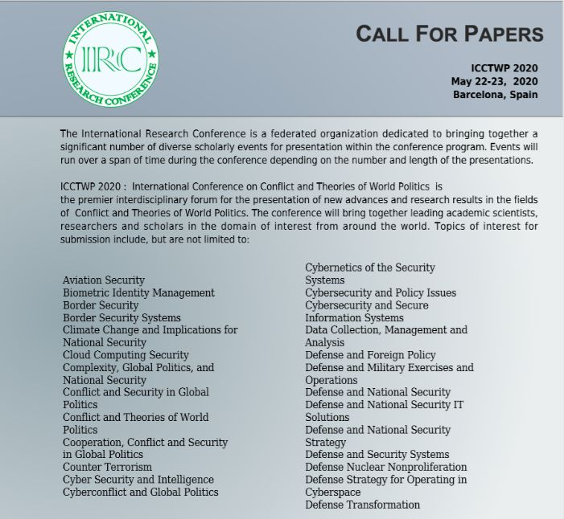
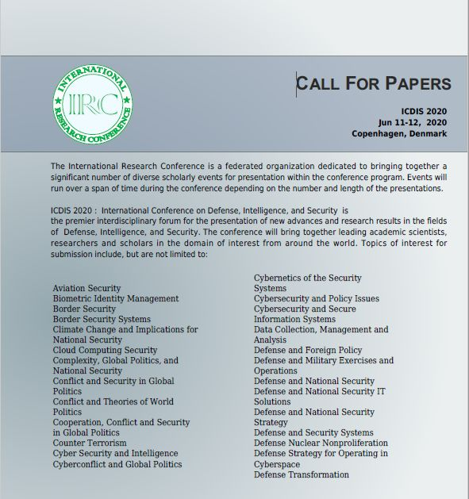
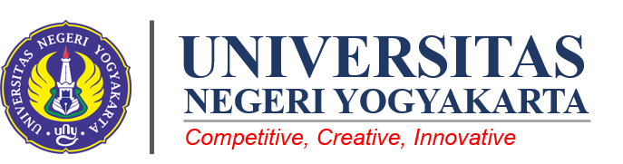
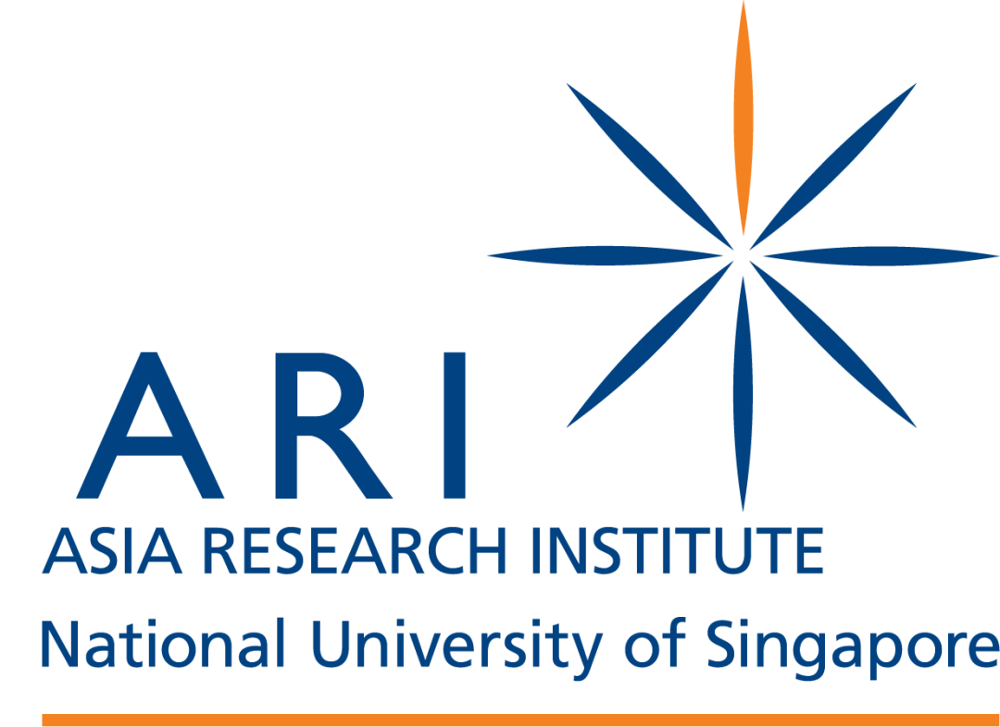
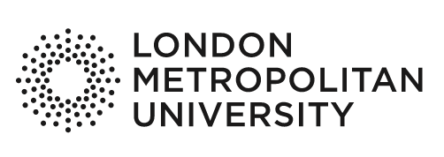

收录于合集 #国际会议 9个

冲突与世界政治理论国际会议
【主题】
冲突与世界政治理论国际会议
International Conference on Conflict and Theories of World Politics
【时间 】
2020年5月22日-2020年5月23日
【地点】
西班牙巴塞罗那，Sallés Hotels Pere IV
【截止日期】
投稿已截止，注册时间截止至2020年4月23日
【联系方式 】
Carrer de Pallars
128-130-08018
简介
国际冲突与世界政治理论会议旨在汇集世界一流的学术科学家、研究人员和研究学者，交流并分享他们在冲突和世界政治理论各方面的经验和研究成果。它还为研究人员、实践者和教育工作者提供了一个重要的跨学科平台，以介绍并讨论在冲突和世界政治理论领域中最近的创新、趋势、关注以及遇到的实际挑战和采取的解决方案。
我们真诚地鼓励作者们通过提交研究摘要、论文和电子版海报，参与会议并帮助塑造会议。此外，我们诚邀高质量的研究贡献，描述在所有冲突领域和世界政治理论方面的概念性、建设性、经验性、实验性或理论性工作的原始和未发表的成果，并在会议上发表。会议征集关于会议主题和主题摘要、论文和电子海报，包括新颖的研究材料的图表和参考文献。
ICCTWP 2020与《冲突与世界政治理论》特刊合作。一些精选的高影响力的论文全文也将被考虑作为特刊，所有提交的论文都有机会被纳入考虑范围内。论文的选择将在同行评审以及在会议演示阶段进行，提交的论文不能是已被任何其他期刊或出版物已纳入考虑的。论文的最终评选将由特邀编辑和总编共同根据同行评审报告做出。选定的论文全文将在网上免费发表。
会议提供成为参展商或赞助商的机会。如欲以赞助商或参展商身份参加，请下载并填写大会赞助申请表。
会议官网与详细信息，请前往：https://panel.waset.org/conference/2020/05/barcelona/ICCTWP。

国防、情报和安全国际会议
【主题】
国防、情报和安全国际会议
International Conference on Defense, Intelligence, and Security
【时间 】
2020年6月11日-2020年6月12日
【地点】
丹麦哥本哈根
【截止日期 】
投稿已截止，注册时间截止至2020年5月11日
简介
第22届国防、情报和安全国际会议旨在汇集一流的学术科学家、研究人员和研究学者，交流和分享他们在国防、情报和安全各方面的经验和研究成果。它还为研究人员、实践者和教育工作者提供了一个重要的跨学科平台，以展示和讨论国防、情报和安全领域的最新创新、趋势和关注以及遇到的实际挑战和采用的解决方案。
联系方式及详细信息，请前往会议官网：https://panel.waset.org/conference/2020/06/copenhagen/ICDIS。

向新生活过渡：南亚与东南亚前战斗人员在冲突后 的生活轨迹（1945年至今）
【主题】
向新生活过渡：南亚与东南亚前战斗人员在冲突后的生活轨迹（1945年至今）
Transitioning to a new life: Post-conflict trajectories of former combatants in South and Southeast Asia, 1945-present
【时间 】
2020年11月6日至2020年11月7日
【地点】
印度尼西亚，日惹国立大学
【截止日期 】
摘要投稿截止至2020年5月15日
【联系方式】
Bart Luttikhuis，莱顿大学研究员，luttikhuis@kitlv.nl
简介
在对冲突后的过渡的研究中，一个主要问题是前士兵和非国家战斗人员如何才能“重返社会”。前战斗人员在各自社会的政治发展中经常发挥关键作用，在重新爆发冲突的情况下，他们也经常是关键角色。在这次研讨会中，我们对南亚和东南亚国家前战斗人员为自己绘制的各种生活轨迹以及各自政府为解决与前战斗人员的“重返社会”相关的问题而尝试（或多或少取得成功）的方式感兴趣。
从我们对1940和1950年代的印度尼西亚进行的历史研究，以及从我们在2020年1月以前的研讨会上展示的非洲研究中，我们很明显可以看出，许多失业者和受社会侵蚀的退伍军人（包括正式和非官方民兵）构成了一个复杂的问题。在持续爆发暴力事件十多年或更长时间之后，以及在国家主导下推进和平与重新融合的努力最终未果，许多退伍军人再次在非国家和半国家（武装）组织中开展行动。其他人则参与了各种政治活动。无论以哪种方式，这些人的生活轨迹始终对各自社会的政治发展产生深远的影响。
在2020年11月6日至7日的研讨会上，我们希望对整个南亚和东南亚，特别是20世纪下半叶类似过程进行比较研究。我们对有关退伍军人的运动、暴力的非国家行为者、“重返社会”政策或冲突后平定的历史研究感兴趣。我们尤其期待研究缅甸、马来西亚和越南问题的发言人，但同样欢迎研究其他南亚和东南亚国家与地区的稿件。
这场在日惹国立大学UGM校园举办的研讨会是与莱顿大学（荷兰皇家东南亚和加勒比海研究所）合作组织的。我们有足够的资金来支付旅费和住宿费（最高合理限额）。如果您想加入我们，请在2020年5月15日之前将摘要发送给我们，我们将与您取得联系。如果受邀，预计将在2020年10月20日之前提交全文。我们正在努力出版编辑本（阿姆斯特丹大学出版社对此表示有兴趣）。
会议信息来源：https://networks.h-net.org/node/73374/announcements/5987633/transitioning- new-life-post-conflict-trajectories-former。

派遣国制度和国际技术移民：全球移民时代的亚洲视角
【主题】
派遣国制度和国际技术移民：全球移民时代的亚洲视角
Sending State Regimes and International Skilled Migration: Asian Perspectives in the Age of Global Migration
【时间 】
2020年8月26日—27日
【地点】
新加坡，新加坡国立大学
【截止日期 】
提案投稿截止至2020年3月31日，接收通知将在2020年4月下旬发出；参与者需在2020年7月31日之前发送完整的论文草稿（约6,000字）
【联系方式】
Ms Kristel Acedera, arikafa@nus.edu.sg
简介
研究移民的学者越来越认识到，在定义移民经历方面，重视派遣国与接收国之间多方向与跨境联系的重要性。然而，在了解当代移民对政府和公共政策的影响时，大多数移民研究主要集中在接收国家的观点上，重点是控制、经济影响和移民融合等问题。相比之下，派遣国在积极促进或默许其公民的国际移徙方面的作用吸引的学术关注却很少。结果就是，对劳务移民的研究常常将派遣国视为“不重要的辅助”（Patton，1994，3），只是对消耗自己公民劳动力的更强大的接收国的要求做出反应。对派遣国在移民离开之前所做的事情的理论研究不足以及派遣国的政策对国际移民的技能构成、地理范围和规模的影响，仍然是移民研究领域的重要缺口（Lee，2017）。
该研讨会建立在逐渐扩大的文献基础之上，这些文献将注意力重新集中在派遣国家移民制度上。尤其是，我们希望收到研究产生并促进劳务移民的国家政策、战略和国家结构的论文。我们对为理论增加细节的论文感兴趣，这些理论将派遣国政权主要描绘成“劳务经纪人”机构，受到招募和部署工人以满足外国雇主要求的单一命令的支配。（出于节省篇幅的考虑，可以删除）最后，本次研讨会希望收到有关派遣国如何在当前全球形势下谈判管理移民的任务的论文，因为在当前全球形势下在线招聘、中介链条、跨国移民和跨国社交网络已改变了人们跨境流动的方式。
我们希望收到有关亚洲派遣国家政权和国际劳工移民这些主题的反映亚洲观点的论文。可能的主题包括但不限于以下问题：
•我们如何从理论上推断派遣国在国际技术移民中所扮演的多重角色（例如生产、监管、促进和保护）？
•哪些行为者和组织（直接或间接）参与了旨在促进劳动力输出的国家政策？
•派遣移民的国家政策在技能构成（例如，通过促进对培训和教育基础设施的投资）以及技术移民的规模和方向（例如，通过使用双边协议或其他协议）方面如何影响国际劳工移民模式？
•派遣国和接收国如何通过外交、贸易谈判，以及区域性咨询团体、国际劳工组织（ILO）、国际移民组织（IOM）、经合组织（OECD）等国际组织的工作，共同形成全球形式的社会劳动规范？
论文提案应包括标题、摘要（250字）和简短的个人简介（150字）。摘要应包括清晰的陈述，以说明论文的概念和方法论基础，并总结论文的主要论点和发现。请注意，仅接受以前未发表的论文或尚未在其他地方提交的论文。组织者计划根据会议上发表的论文发表特刊。参加会议即表示您同意参加组织者将来的出版计划。酒店住宿和/或机票费用将提供给被接收论文的参与者（每篇论文一位作者）。
下载提交表格请点击“阅读原文”，会议来源：https://ari.nus.edu.sg/events/state-regimes/。

特朗普、电视与媒体：从戏剧 到“假新闻” 再到推特风暴
【主题】
特朗普、电视与媒体：从戏剧到“假新闻”再到推特风暴
Trump, Television and the Media: From Drama to “Fake News” to Tweetstorms
【时间 】
2020年6月12日
【地点】
英国，伦敦都市大学（London Metropolitan University）
【截止日期 】
提案提交截止至2020年4月1日，对提案的回复将在截止日期前两周内通过电子邮件发送
【联系方式】
Dr Karen McNally, TrumpTelevisionMedia Conference@gmail.com
简介
2016年11月，唐纳德·特朗普（Donald Trump）就任总统，他的总统任期已经成为美国历史上最受到媒体驱动和批评的任期。特朗普作为媒体名人的固有身份一直是他政治风格的核心要素，因为他利用各种媒体进行政治宣传。同时，更广泛的电视和媒体已经迅速适应了这个不断挑战着行政和政治规范的总统任期所拥有的特殊氛围和快节奏的新闻环境。当电视通过从戏剧到讽刺剧的形式描绘当今时代的时候，事实与虚构、现实主义与夸张之间的界限似乎越来越难以界定。所有这一切都发生在一个全国性的经历中，其中包括美国文化中大规模的分裂，以及美国历史上第三次电视直播的总统弹劾听证会。
这次为期一天的会议旨在探讨媒体对特朗普总统任期的影响，以及特朗普时代对各种媒体形式的影响。其目的是将来自不同领域的学者聚集在一起，对美国政治和文化中这个非凡的时代进行跨学科的讨论。投稿者可以选择不同话题进行会议演讲，比如通过考虑美国电视对该时代的虚构描述，探索特朗普和新闻媒体之间的关系，或者审视这个媒体总统任期的政治影响。我们预计论文的广度将超越总统任期的具体范畴，涵盖种族和性别分裂的政治和文化背景，以及诸如“#MeToo”、“Time’s Up”和“Black Lives Matter”等抗议活动。这次会议的最终目的是反思特朗普和媒体的合流如何影响了美国文化景观与国家政治。
欢迎为个人论文和会议小组提供提案。20分钟的个人论文摘要不得超过300字。小组提案应包括三个个人的论文提案和一个关于小组主题的100字概述。所有提案都应附有简短的作者传记。
请通过以下电子邮件地址向会议组织者Dr Karen McNally发送提案和任何疑问：TrumpTelevisionMediaConference@gmail.com。
会议信息来源：https://networks.h-net.org/node/73374/announcements/6015884/conference- cfp-updates-trump-television-and-media-drama-fake。

“阅读原文”密码：ya21
【编辑】李佳霖
纪楷欣
【排版】王国伟